Data Structures and Algorithms
with Object-Oriented Design Patterns in C++
Data Structures and Algorithms
with Object-Oriented Design Patterns in C++This section presents two less commonly used forms of asymptotic notation. They are:
 ).).
).).
Definition (Theta) Consider a function f(n) which is non-negative for all integers. We say that ``f(n) is theta g(n),'' which we write 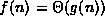, if and only if f(n) is O(g(n)) and f(n) is .
Recall that we showed in Section that
a polynomial in n,
say  ,
is 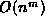.
We also showed in Section that
a such a polynomial is 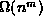.
Therefore, according to Definition ,
we will write 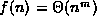.
,
is 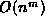.
We also showed in Section that
a such a polynomial is 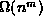.
Therefore, according to Definition ,
we will write 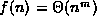.
Definition (Little Oh) Consider a function f(n) which is non-negative for all integers
Little oh notation represents a kind of
loose asymptotic bound
in the sense that if we are given that f(n)=o(g(n)),
then we know that g(n) is an asymptotic upper bound
since f(n)=O(g(n)),
but g(n) is not an asymptotic lower bound
since f(n)=O(g(n)) and 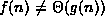
implies that  .
.
For example, consider the function f(n)=n+1.
Clearly,  .
Clearly too, 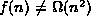,
since not matter what c we choose,
for large enough n, 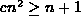.
Thus, we may write 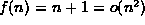.
.
Clearly too, 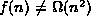,
since not matter what c we choose,
for large enough n, 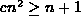.
Thus, we may write 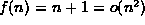.
 Copyright © 1997 by Bruno R. Preiss, P.Eng. All rights reserved.
Copyright © 1997 by Bruno R. Preiss, P.Eng. All rights reserved.